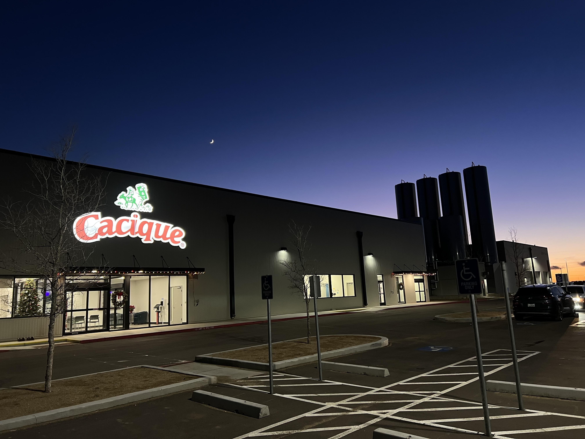
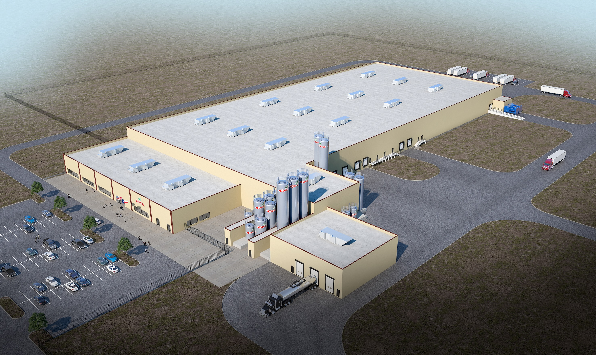
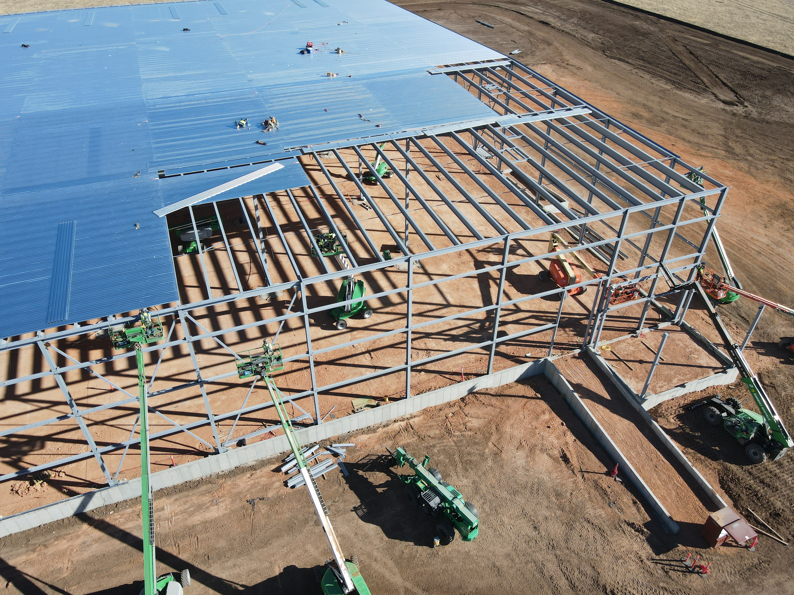
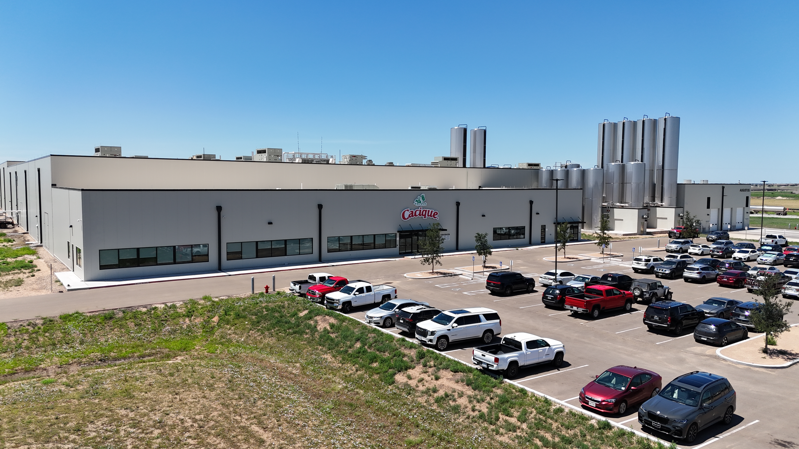
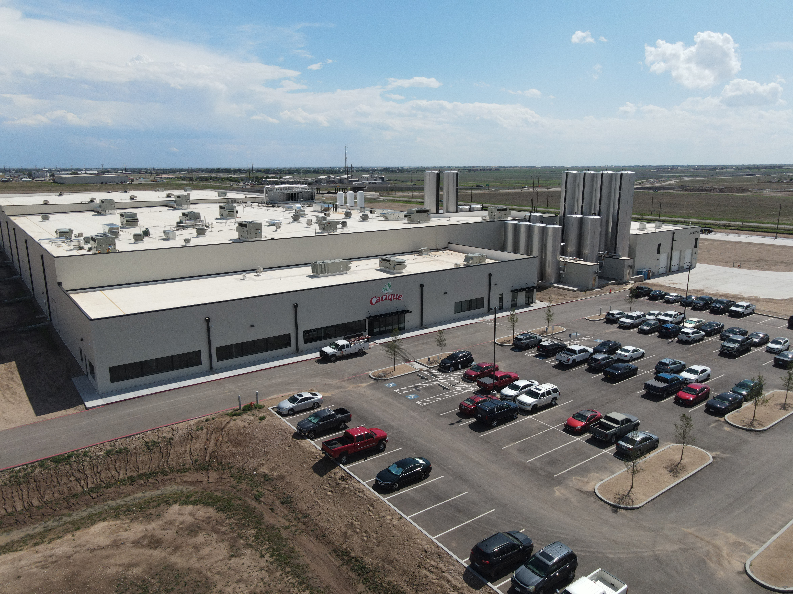

Amarillo, Texas · Food Production Facility
A modern 206,000 ft² food production plant paired with a temperature-controlled distribution warehouse.

Project Overview
CSC served as the Owner’s Representative for the delivery of a 206,000-square-foot food production facility in Amarillo, Texas, with an integrated temperature-controlled distribution warehouse. The $166,000,000 program was executed to FM (Factory Mutual) and UL (Underwriters Laboratories) requirements and built for FDA (Food and Drug Administration) regulated processes. Our team coordinated design-build partners, city reviews, utilities, and specialty systems, then supported commissioning, start-up, and ongoing improvements, including a brine tank system and additional production lines.
206,000 ft² production + temperature-controlled distribution
8501 S Georgia Street, Amarillo, Texas 79118
$166,000,000
FM, UL, FDA
Owner’s Representative, commissioning, start-up, and continuing projects
Concept to Completion



Completed Site — Context Views


Onsite Wastewater Treatment
The project includes a dedicated wastewater treatment plant sized for process demand and future expansion. The system supports reliable production while managing environmental responsibilities on site.

Construction





Gallery





Location
8501 S Georgia Street, Amarillo, Texas 79118